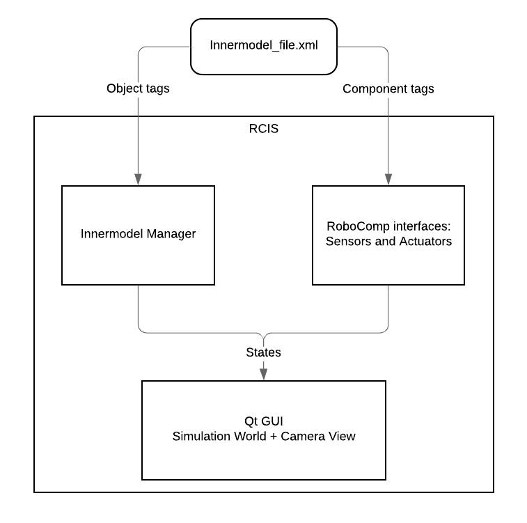

RoboComp Innermodel Simulator (RCIS)
Introduction
RCIS is one of the core tools of RoboComp, which creates a simulation environment for operational testing of individual components or system testing of a combined aggregated system of components. To be concrete, RCIS simulates a RoboComp’s representation of the world and the robot itself.
RCIS is implemented in C++ using QGLWidget library to draw various sprites such as planes, walls, boxes, robots, etc that represent the simulated world. The picture below describes a general view of implementation parts of RCIS:

RCIS consists of two main implementation parts: Innermodel Manager and RoboComp interfaces: Sensors and Actuators. The Innermodel Manager part deals with internal physics and transformation between simulated objects. Currently, these are the list of implemented RoboComp interfaces that are ready for simulation:
Camera
DifferentialRobot
IMU
JointMotor
Laser
RGBD
Display
When starting simulation, RCIS will read an XML file with the definitions of the simulated world and robot, then it populates the objects defined in the XML file and starts component servers for each of these interfaces. These component servers dedicatedly process information captured from or interacted with the simulation environment. The default port of RCIS is 11175, any other components, which want to connect and send message to RCIS, must set the forward port accordingly.
Installation
This section assumes the user has already installed the RoboComp core library as in this guide, then we can fetch some meshes and textures used by the simulator (it will take a while):
cd ~/robocomp
git annex get .
Usages
In this section, we will demonstrate an example usage of RCIS.
Run the RCIS
Now let’s run the simulator with “simple world” definitions simpleworld.xml
cd ~/robocomp/files/innermodel
rcis simpleworld.xml
Now, RCIS should be up and running with a simple robot endowed with a differential base, a laser, and an RGBD camera. The robot will be shown in an environment with four walls, some boxes, and a wooden floor. Please interact with the GUI window by dragging the mouse to see the world with different views.
Using the keyboard as a JoyStick
To control the robot in the simulated world, we must first install the basic RoboComp components:
cd ~/robocomp/components
git clone https://github.com/robocomp/robocomp-robolab.git
We want to use our keyboard to control the robot, we can compile the component and call it:
cd ~/robocomp/components/robocomp-robolab/components/keyboardrobotcontroller
cmake .
make
src/keyboardrobotcontroller.py etc/config
Please use the arrow keys to navigate the robot, the space bar to stop it an ‘q’ to exit.
Note that you must have your simulator running in a terminal and only then you can run a component in another terminal. You will get an error message if you run the above component without having RCIS already running. Also, remember that each RoboComp basic component has its README file, you should check the README file if the component supports the simulation or not.
Resolving Issues
If the keyboard control is unresponsive, it could be that your TCP port of keyboardrobotcontroller does not match with the TCP port of DifferentialRobotComp component defined in simpleworld.xml.
To check for DifferentialRobotComp TCP port, find the following tag in file robocomp/files/innermodel/simpleworld.xml:
<differentialrobot id="base" port="10004">
...
</differentialrobot>
To check for keyboardrobotcontroller TCP port, find the following parameter in config file robocomp/components/robocomp-robolab/components/keyboardrobotcontroller/etc/config:
# Proxies for required interfaces
DifferentialRobotProxy = differentialrobot:tcp -h localhost -p 10004
...
Whenever you want to control or receive data from the component interfaces defined in the XML file, you must ensure the correct matching port between your component and the simulated component.